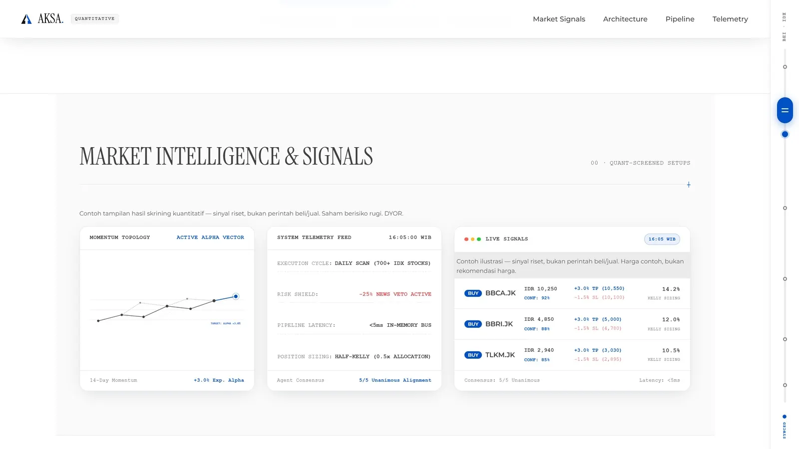

AKSA: Quantitative Stock Intelligence
Autonomous IDX Screener & Backtest EngineScreener trading kuantitatif untuk 700+ saham BEI/IDX. Menggabungkan model XGBoost dengan Dense Chart Embeddings, DuckDB + Polars OLAP data store untuk komputasi indikator cepat, SHAP AI explainability, simulasi backtest realistik, dan 4-phase notifikasi bot Telegram harian.
Python
XGBoost
FastAPI
DuckDB
Polars
SHAP
Telegram Bot